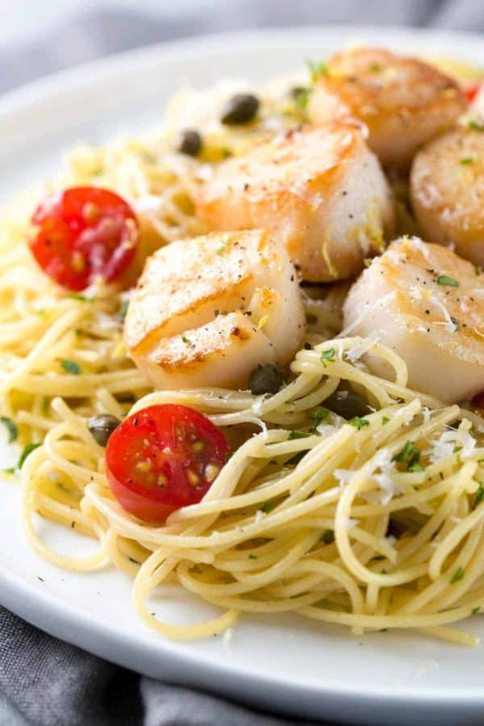

Pasta

Description
This scallop pasta dish is a very simple, easy-to-prep meal that you will most likely be asked
to make again! The taste, if carefully prepared and not overcooked, is incredible.
Ingredients
- Pasta
- Garlice and butter
- Scallops
- Lemon juice
- Cream
- Parmesan
- Seasonings
- Herbs
Steps
- Bring a large pot of lightly salted water to a boil.
Add angel hair pasta and cook, uncovered, for 4 to 5
minutes or until al dente; drain.
- While pasta is cooking, melt butter in a large skillet over medium heat.
Stir in garlic and cook just until fragrant and softened, about 1 minute.
- Slice any scallops over 3/4-inch thick in half so they'll cook evenly.
- Stir scallops, basil, and parsley into the skillet. Cook and gently stir
just until scallops feel slightly firm when pressed with a finger, about 2 to 3 minutes.
Scallops will become tough and chewy if overcooked.
- Reduce heat to low; stir in lemon juice and season with salt and pepper. Pour in cream
if you like a thicker sauce and cook just until the sauce begins to simmer.
- Ladle scallops and sauce over hot pasta and sprinkle Parmesan cheese over top.